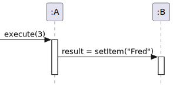
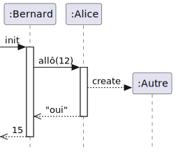
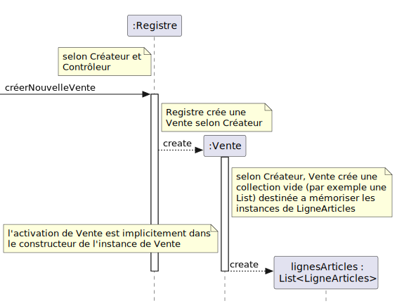
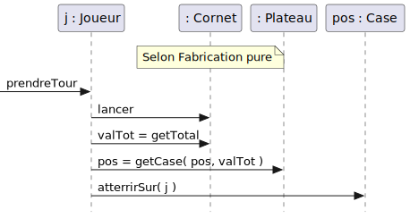
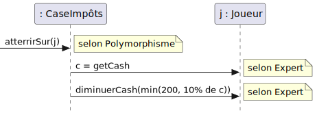

Pour chacun des diagrammes suivants, écrire les classes TypeScript avec les méthodes indiquées dans le diagramme. (Cet exercice complémente le livre de Larman 2005 à la section F18.6/A20.4.)
Vous pouvez utiliser VSCode pour vous aider avec le TypeScript, mais cet outil n’est pas forcément permis lors d’un examen.
Voici un modèle à suivre. Pour le diagramme suivant :

On code les classes suivantes en TypeScript :
class A {
b: B; // A envoie un message à B, visibilité d'attribut
execute(arg0:number):any {
const result = this.b.setItem("Fred");
}
}
class B {
setItem(arg0:string):any {
//...
}
}Écrire le code pour la figure suivante.

Écrire le code pour la figure suivante décrivant la création de la collection de Vente (tirée de Larman 2005, figure. 17.6).

Écrire le code pour la figure suivante décrivant l’utilisation d’un Cornet dans le jeu de Monopoly (tirée de Larman 2005, fig. F22.9)

Écrire le code pour les figures suivantes décrivant les appels polymorphes de la méthode
atterrirSurdans le jeu de Monopoly (tirées de Larman 2005, fig. F22.6 et F22.7)